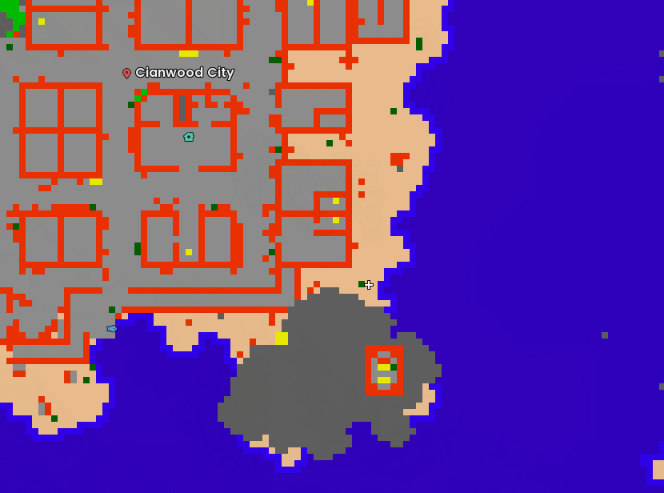
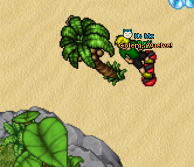

Quests principales
Resumen de varias quests permanentes importantes y sus desbloqueos principales.
| Quest | Nivel | Recompensa / desbloqueo |
|---|---|---|
| Captain Willy: Reliquia | 80 | 1,000,000 EXP y acceso a la etapa del Lucky Amulet |
| Lucky Amulet | 250 | 1 Lucky Amulet |
| Flint | 100 | EXP, Ancient Stones y Flint Shelf |
| Dr. Vektor | 200 | 5,000,000 EXP, Balls, Stones y acceso a Porygon |
| Acceso a Hoenn | 250 | Progresión de Hoenn y huevo aleatorio de starter |
| Orange Islands | Sin bloqueo explícito en la fuente | Viaje Orange Islands ↔ Johto |
| Dr. Oliveira: Shiny Ditto | Sin bloqueo explícito en la fuente | Shiny Ditto conservando Ball, Boost y Helds |
Captain Willy y la reliquia
La cadena comienza en los muelles al sur de Olivine. Captain Willy envía al jugador a una zona marítima de Tentacruel. Esta etapa sirve como requisito previo para la quest del Lucky Amulet.
Flint
Primera entrega
- 150 Onix Tail
- 200 Stone Rocks
- 200 Horn Drill
- 50 Rock Plate
Recompensa: 500,000 EXP.
Segunda entrega
- 10 Crystal
- 10 Metal
Recompensa: 3 Ancient Stones y elección de 1 Flint Shelf.
Acceso a Orange Islands
Busca la Boarding Key en un cofre oxidado de la playa de Cianwood y entrégala a Captain Frederic para habilitar el viaje entre Orange Islands y Johto.
Dirígete al punto mostrado en el mapa de Cianwood City. La palmera se encuentra en la zona de playa al sureste de la ciudad.

Al llegar al lugar, busca la palmera que aparece en la siguiente imagen.

Haz clic en la arena alrededor de la palmera. No es necesario hacer clic directamente sobre el tronco; prueba en los espacios que la rodean hasta activar el progreso de la quest.
Dr. Oliveira y Shiny Ditto
- Derrota 50 Ditto.
- Recibe 500,000 EXP.
- Reúne 1,000 DNA Gosme, 1 Ditto normal y 1 DNA Chain.
- Entrega los materiales a Dr. Oliveira.
La primera conclusión entrega un Shiny Ditto conservando la Poké Ball, Boost y Helds del Ditto entregado. La conversión de materiales puede repetirse después, pero la EXP inicial no.